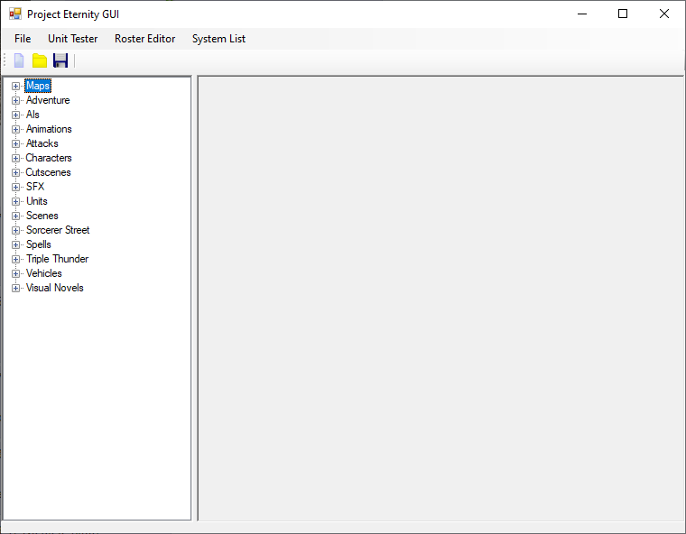

Data Structure
All your game files will go into the “Content” folder. If you’re developing the game with source, it will usually be under Project Eternity\Project Eternity\bin\Debug or Release.
The assets are stored by categories in their respective folders, Units, Characters, Attacks, Maps, Visual Novels, Cutscenes, etc. There are other generic folders such as Fonts but can be ignored.
Once you’re ready just open Project Eternity GUI.exe and it’ll read the Content folder to present it in a more accessible view.